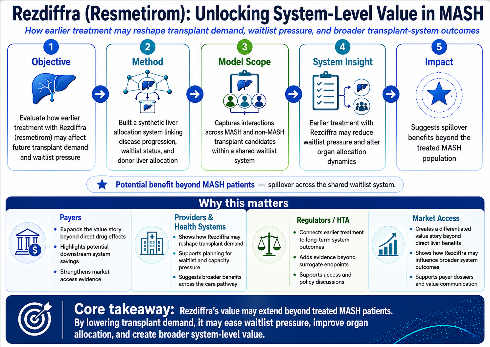
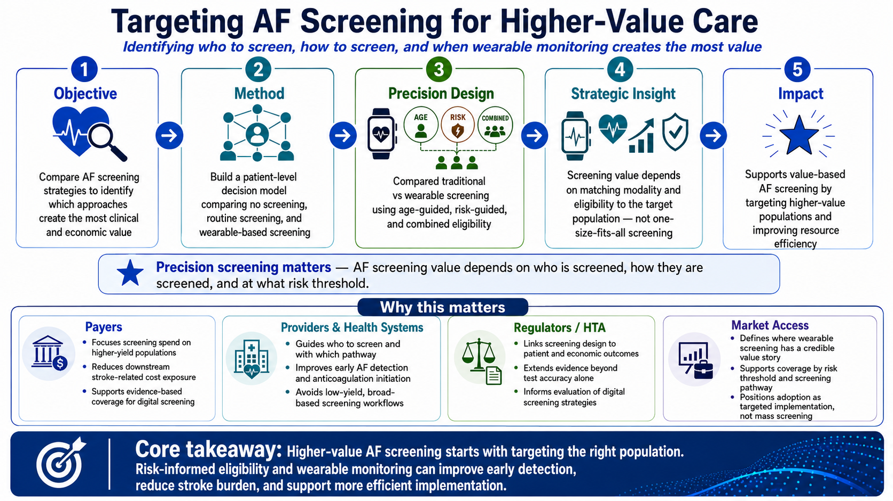
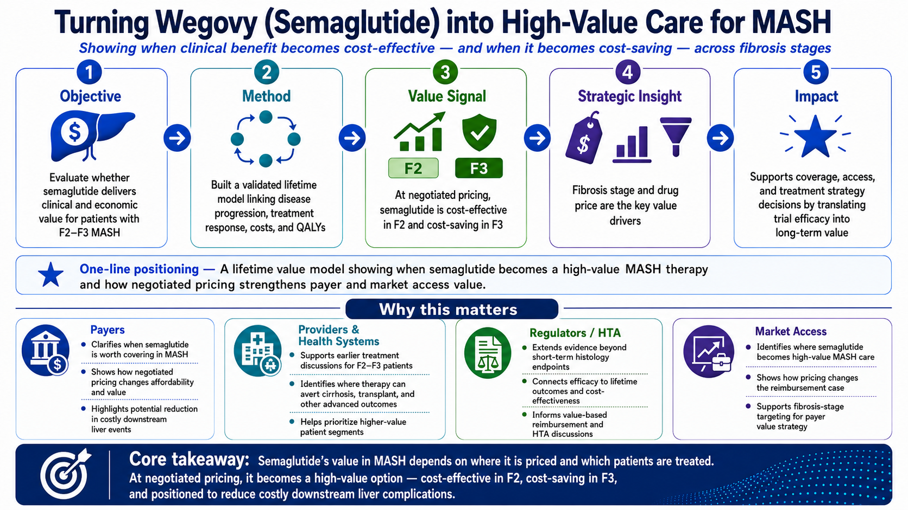
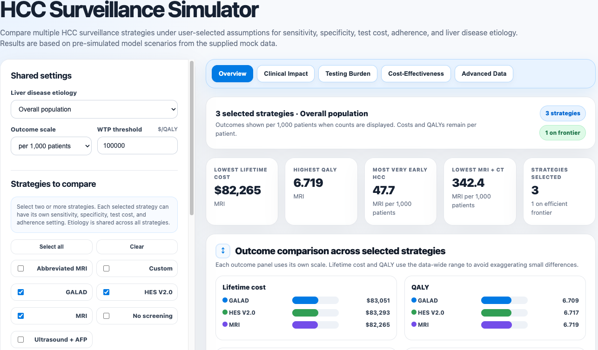
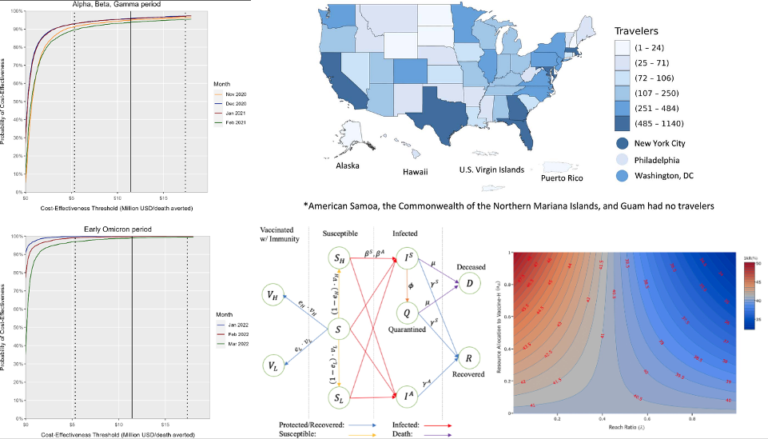
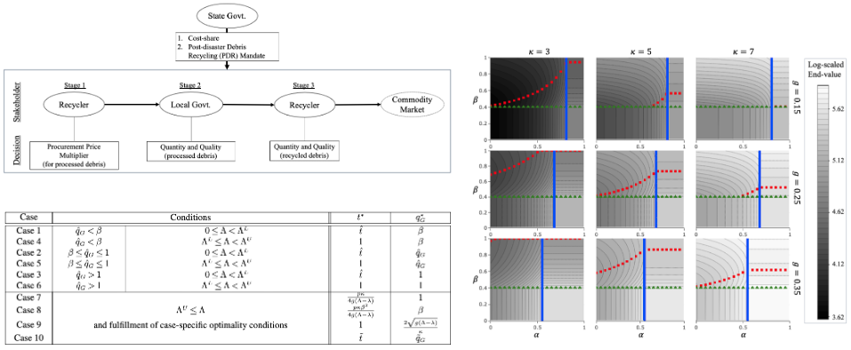

HEOR & Value
Supporting coverage and reimbursement decisions with quantitative methods
I develop HEOR, RWE, and data-driven strategies that help healthcare organizations generate decision-ready evidence, communicate value, and build partnerships that support access, reimbursement, and strategic decision-making.
I combine quantitative methods, real-world data, and decision science to generate evidence that drives impact.
Supporting coverage and reimbursement decisions with quantitative methods
Using healthcare data to inform strategy and resource allocation.
Innovative modeling techniques that strengthen value narratives.
Building robust roadmaps that turn data into actionable assets
Experience
Mass General Brigham — HEOR, MASH, liver transplant, and AF screening models
* External collaborations with a pharmaceutical company, clinicians, and researchers
Georgia Tech — Medicaid claims analytics, healthcare decision science, and modeling.
* External collaborations with clinicians and researchers
CDC — Infectious disease analytics, surveillance, and public health strategy.
* Internal collaborations with HEOR scientists, epidemiologists, the CDC leadership
PhD in Industrial Engineering @ Georgia Institute of Technology (Minor: Machine Learning)
MS in Operations Research @ Georgia Institute of Technology
BS in Industrial & Systems Engineering @ Georgia Institute of Technology (Minor: Mathematics)
Featured Portfolio
Projects that connect evidence to strategy and support decisions by multiple stakeholders (e.g., payer, providers, regulatory, and market access).

Built a synthetic liver allocation model to show how earlier MASH treatment may reduce transplant pressure and create broader system value.
View Diagram & Impact
Identified who to screen, how to screen, and when precision screening with wearable monitoring creates the most value.
View Diagram & Impact
Modeled how fibrosis stage and pricing shape semaglutide’s economic and market access value.
View Diagram & ImpactUsed Medicaid claims to map care patterns, identify high-need populations, and reveal care coordination opportunities.
View Diagram & ImpactRezdiffra: System-level Value
Market: United States, Germany, France, Italy, and Spain
Decision problem: Can earlier MASH treatment change downstream transplant demand, waitlist pressure, and organ allocation capacity—not only for MASH patients, but for the broader transplant system?
A synthetic liver allocation model connecting MASH disease progression, waitlist dynamics, and donor liver allocation to evaluate how Rezdiffra adoption may affect transplant demand and system capacity.
Business implication: This work supports the broader value narrative for MASH therapy by quantifying how treatment may reduce future liver transplant demand, improve waitlist outcomes, and create spillover benefits for patients with other liver diseases competing for scarce donor organs.
Presented at ISPOR Europe 2025 (US model) and MASH-TAG 2026 (Germany) & Manuscript submitted
Back to Selected WorkPrecision Screening & Diagnostics Case Study
Decision problem: Who should be screened for AF, with which screening pathway, and at what risk threshold to generate the strongest clinical and economic value?
A patient-level microsimulation model designed to guide value-based AF screening by identifying which populations, screening pathways, and risk thresholds create the strongest clinical and economic case.
Business implication: This work supports evidence generation for digital health, diagnostics, and wearable-based screening by identifying which populations are most likely to benefit clinically and economically from AF screening.
Presented at European Society of Cardiology (ESC) 2025 and ISPOR 2026
Back to Selected WorkValue Evidence Case Study
Decision problem: At which fibrosis stage and price point does Wegovy become a high-value MASH therapy for payers and access decision-makers?
A lifetime value model translating semaglutide’s clinical efficacy into payer-relevant evidence across fibrosis stages and pricing scenarios.
Business implication: By linking clinical trial efficacy to long-term liver outcomes, cost offsets, QALYs, and price thresholds, this analysis helps identify which patient populations and pricing scenarios may deliver the strongest payer-relevant value in MASH.
Back to Selected WorkReal-World Evidence Case Study
Decision problem: Where do Medicaid-insured children with mental health conditions receive care, and which utilization patterns signal unmet need, fragmented follow-up, or high-intensity service use?
A claims-based real-world evidence study mapping pediatric mental health care patterns, utilization intensity, and opportunities for better care coordination among Medicaid-insured children.
Business implication: This work supports the use of large-scale real-world data to quantify disease burden, healthcare utilization, and access gaps in vulnerable populations — evidence that can support burden-of-illness studies, outcomes research, and health policy decision-making.
Multiple published studies and on-going projects
Back to Selected WorkOther Work

Interactive dashboard where users can compare liver disease screening strategies by impact, testing burden, and cost-effectiveness.

Simulation and analytics models supporting vaccination, surveillance, and outbreak-response decisions.

Game theory and mathematical optimization model investigating the impact of federal and state policies on private sectors' decisions
Selected Scientific Presentations & Publications
EXCLUDING 4 HEOR manuscripts under review
Contact
Currently looking for new opportunities!